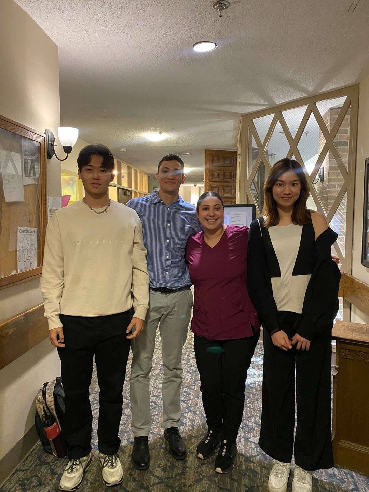
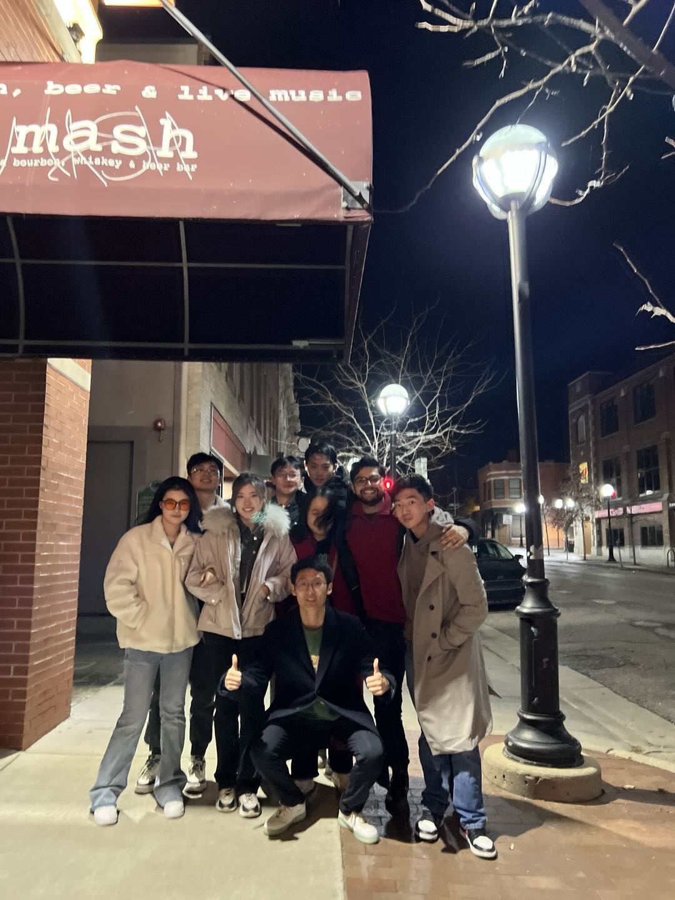

刘益恺 · YIKAI LIU
临床与运动营养 · 密歇根
「约 1 年」北美临床与大众健康社团经历
本页对应简历中的Clinical Dietitian & Researcher · Corewell Health & UMich（约 2022 年 9 月—2025 年 4 月）：在美国区域性医疗体系与密歇根大学相关临床、校队与科研场景中，执行医学营养治疗（MNT）、服务 NCAA 一级运动员，并参与数据驱动的营养研究；同时在校内创办并带领 W&W（Wellness and Weight Management） 学生体重管理社团，面向校园人群做周期化训练与科普。


临床1200小时
- 独立承担并完成 500+ 例复杂病例的医学营养治疗（MNT），围绕 PCOS、代谢综合征等病理设计个体化干预与随访。
- 担任 50+ 名 NCAA Division I 运动员的运动营养顾问；结合 DEXA/BOD POD 体成分数据与比赛微周期，制定宏量营养素周期化方案；面向橄榄球队等开展营养教育与团体培训。
- 在 RStudio 上对睡眠呼吸与血压等大规模生理数据做多变量回归，将临床遥测转化为可投稿、可宣讲的研究结论，并在全美营养学相关会议上报告。
- 临床信息系统与流程：Epic、PointClickCare 等工作流衔接；医院与长期照护场景中的记录、交接与多学科沟通。
体重管理
W&W（Wellness and Weight Management）：创办人兼社长；完成注册材料与免责声明；核心团队约 8–10 人。日常组织周期化训练、烹饪示范、营养主题工作坊与户外活动，面向在校学生做体重管理与可持续生活习惯的同伴支持，与临床课表和赛季节奏分开运营、互为补充。